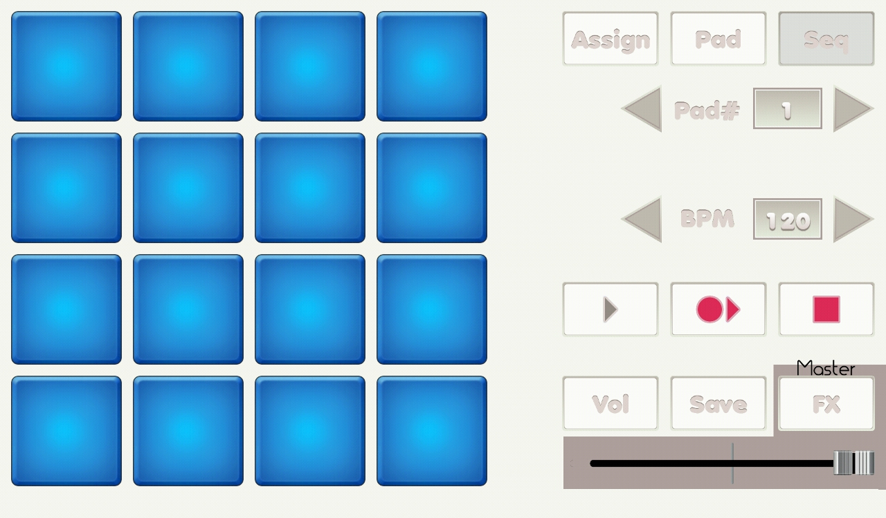

{% include JB/setup %}
Seq screen

- Pads: assign a sequence to corresponding pad number, bottom left is pad# 1 and top right is pad# 16.
- Assign button: change it to assign mode.
- Pad button: change it to pad/free_play mode.
- Pad# arrows: pad number to assign a sequence.
- BPM arrows: bpm.
- Play button: play a sequence at shown bpm.
- Rec and play button: play a sequence and start recording it.
- Rec stop button: stop recording.
- Vol button: read you to volume screen.
- Save button: read you to save screen.
- FX button: read you to filter screen.
- Volume slider: master volume.